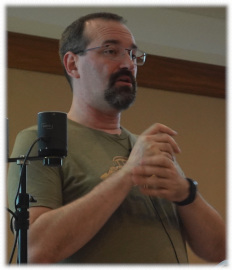

Deep argument inspection for seccomp
In the Kernel Summit track at the 2019 Linux Plumbers Conference, Christian Brauner and Kees Cook led a discussion on finding a way to do deep argument inspection for seccomp filtering. Currently, seccomp filters can only look at the top-level arguments to a system call, which means that there are use cases that cannot be supported. There was a lively discussion in the session, but no definitive conclusion was reached; various ideas were considered, but none seemed to quite fit the bill.
Cook said that the current seccomp filters can only inspect the system-call argument values; if one of those values is a pointer, dereferencing it will not work. Even if it were possible to do so, another thread could change the values after the check is done. That is a classic time-of-check-to-time-of-use (TOCTTOU) race. Programs that are using the filters would like to be able to filter based on file name arguments to restrict which files the programs can access, for example, but that is currently not possible.
A more pressing use case is that new system calls are using an API pattern that puts various parameters (flags, in particular) into a structure, as with clone3(), Brauner said. The address of that structure gets passed to the call along with its size, but the parameters in the structure are off-limits to filters. The idea behind the pattern is to enable additions to the API over time; the structure can be extended and the size of the structure will grow so the system call will be able to recognize when it is called with extra parameters that it does not understand.
Both passive and active filtering of, say, open() calls are also affected, Cook said, so even simply logging file names as part of a passive filtering effort is not reliable. The value for the file name that the filter sees may not be the value that actually reaches the system call. The user-space seccomp decisions feature makes it possible for programs like container managers to reliably handle system calls but, since they cannot filter for only those they are interested in, they have to implement those system calls for every call; there is no way to tell the kernel to simply continue handling the system call once it has been deferred to user space.
System-call flow

The slides [PDF] for the session had what Cook called an "eye chart" for system-call flow that was part of the background information for attendees. After the system call enters the kernel, various ptrace() entry hooks are called, which may block the program while another process, such as a debugger, examines, and possibly changes, the call. Anything about the call be changed, including the system-call number or its arguments; the hook can also request that the system call be skipped.
After that, the seccomp hooks are called, which can result in a wide variety of outcomes, Cook said. They can kill the thread or process, skip the system call, log the call, send a signal to the calling process, defer the decision to user space, or generate ptrace() events. In the latter case, the ptrace() hooks may, once again, change anything, including the system-call number, which means the seccomp filter code needs to be run again. As a kind of a hack, further recursion is disallowed after one iteration of that, he said.
Next, the actual system-call code is reached; it copies the user-space memory into kernel memory for parsing into kernel objects. At that point, the Linux security module (LSM) hooks are called, which can only make a simple accept or reject decision. If it is accepted, the system-call code then operates on the kernel objects to perform its function. Then the ptrace() exit hooks are called and, finally, the call returns to user space.
Both the ptrace() and seccomp hooks are in the wrong place to do deterministic checks of system calls, he said. Until the arguments are copied in the system-call function itself, they can be changed by other threads, either mistakenly or as part of an attack.
On the other hand, the LSM hooks are in the right place, but the LSM interface is not meant for system-call filtering. The LSM hooks are higher-level abstractions that are shared between system calls—the same hook can be called from multiple system calls. However, the recent addition of the SafeSetID LSM has changed the situation somewhat; it can distinguish between system calls that seek to change user ID versus those that change the group ID. But, as yet and perhaps forever, there are no allowances for unprivileged LSMs, so the Chrome browser, for example, could not load an LSM to filter its system calls.
Cook wondered if it makes sense to do deep inspection of system-call arguments via seccomp at all. If you really want to inspect file names or IP addresses, the LSM layer makes more logical sense since the kernel objects of interest are available there. Doing filtering based on system calls makes it possible for user space to get sloppy and only filter open() and ignore rename() for example.
Other possibilities
Cook said that he explored finding a way to make an association between seccomp and an LSM of some sort. It was looking like a "really scary" solution that was overly complex with a lot of layering violations. Another way forward might be to move the seccomp hooks; the ABI says they have to be done after the ptrace() hooks so that means they could be pushed deeper into the system-call path. But there is a problem with that too: adding a hook to every system-call function feels completely wrong to him, for one thing.
Another thought was to move the copying of the arguments to earlier in the system-call path; the actual system call could use that cached copy rather than doing the copying itself. The problem is that things like path-name resolution may result in different kernel objects at the two different points, which still leaves a race condition.
Yet another idea would be to have system calls declare their argument types more completely so that the parsing of the arguments and, if needed, conversion to kernel objects could be done early in the system call path. For many system calls, this would be fairly straightforward, but path-name resolution is significantly more complex, for example. Beyond that, some system calls do things like walk lists of structures in user space, which is messy to handle; "the logic for that is really terrible".
Brauner said that they had come to the realization that allowing deep argument inspection in a generic way, for every system call, is probably not the right way forward. There is a set of system calls that are of most interest to user space for filtering for security purposes. He thought those could probably be handled separately unless someone has a great idea for how to solve the problem generically.
He asked the assembled kernel developers if a piecemeal approach made sense by adding support for individual system calls. Aleksa Sarai said that it did make sense but he wanted to know how user space would be able to detect which system calls are supported. Cook said, "yet another problem", with a chuckle. Some way for the kernel to mark system calls as having that ability will be needed, Brauner said; that was suggested on the mailing list by Andy Lutomirski, he said.
An attendee said that the session made it clear that the filtering is being done in the wrong place, at least for filtering based on kernel objects, such as file handles rather than path names. The LSM hooks are in the right place and have access to the right objects, so some things should be done with seccomp and others with an LSM, they said. If you want to work with file objects, for example, that would have to be done in an LSM.
Cook agreed that filtering is happening in the wrong place, but the alternatives don't seem all that palatable either. The Landlock LSM project is working on ways to have unprivileged code be able to configure a sandbox by attaching eBPF programs to the LSM hooks. But that approach exposes LSM internals that the LSM developers are not comfortable exposing. In addition, doing system-call filtering would mean that the LSM hooks need to have a way to determine what system call invoked them, which is not something they have now (except in the limited SafeSetID case) and runs counter to the idea behind the LSM hooks.
H. Peter Anvin said that he disagreed that seccomp filtering was being done in the wrong place. Moving the filtering deeper in the system-call path will simply expose more attack surface. He acknowledged that means that seccomp filtering cannot do all of what people would like it to do, but that isn't necessarily a problem.
From his perspective, Brauner said that path-based filtering is not really required and that grafting it onto seccomp filtering seems wrong at some level. But there remains a need to be able to filter based on things like flags arguments that are inside structures. Others seemed to agree that handling kernel objects should be left to the LSMs, while arguments such as flags make sense for seccomp.
An attendee wondered why LSM plus eBPF was not "just the answer". Cook said that part of the problem is that there is no unprivileged way to do either right now. It was his hope that attaching eBPF programs to LSM hooks would make its way into the kernel, thus saving seccomp from having to solve the deep argument inspection problem. There are still a lot of discussions about how that would work and both unprivileged eBPF and unprivileged LSMs have met resistance from their maintainers.
Beyond that, attaching eBPF to LSMs gives user space a way to create "gadgets" that can be used in timing attacks of various kinds, an attendee said. That makes it hard to get the security parameters of the feature right. The LSM developers are also concerned about leaking their internal state via the eBPF programs that could be attached.
Right now, just figuring out where the inspection would be done would be a start, Cook said. Then there are more questions of how the filtering would be hooked up to it and so on. In addition, there are the upstreaming issues, Brauner said. Toward the end, Cook said that he was hoping that someone would have a great idea that they had not thought of to solve the problem neatly, but it would appear that is not the case. It is a problem that arises frequently, though, especially in its simplest form (e.g. filtering on flag values), so it seems likely that we have not heard the last of it.
[I would like to thank LWN's travel sponsor, the Linux Foundation, for travel assistance to Lisbon for LPC.]
| Index entries for this article | |
|---|---|
| Kernel | Security/seccomp |
| Security | Linux kernel/Seccomp |
| Conference | Linux Plumbers Conference/2019 |
Posted Sep 18, 2019 20:24 UTC (Wed)
by Cyberax (✭ supporter ✭, #52523)
[Link] (6 responses)
Posted Sep 18, 2019 21:16 UTC (Wed)
by anselm (subscriber, #2796)
[Link]
Foresight? I think Windows NT inherited that idea from VAX/VMS. Remember that, way back when, Microsoft hired the head VMS guy from Digital to work on Windows NT; accordingly, Windows NT, when it was new, had a lot in common with VMS.
Posted Sep 18, 2019 22:13 UTC (Wed)
by k3ninho (subscriber, #50375)
[Link] (4 responses)
K3n.
Posted Sep 18, 2019 22:37 UTC (Wed)
by cyphar (subscriber, #110703)
[Link] (3 responses)
Posted Sep 18, 2019 22:52 UTC (Wed)
by iabervon (subscriber, #722)
[Link] (2 responses)
Posted Sep 18, 2019 22:57 UTC (Wed)
by jake (editor, #205)
[Link] (1 responses)
system calls copy the user-space arguments before they start using them; after that point, user space can no longer change them (and affect the system call) ... the caching idea would just move that copying earlier in the system-call flow ...
jake
Posted Sep 18, 2019 23:06 UTC (Wed)
by cyphar (subscriber, #110703)
[Link]
Posted Sep 18, 2019 23:29 UTC (Wed)
by Cyberax (✭ supporter ✭, #52523)
[Link] (1 responses)
Some syscalls like clone3() are already doing the right thing, so for them it'd be a trivial wrapper. For other syscalls custom code will have to be written.
This can also be done incrementally. I doubt sandboxes care much about arguments for vm86 syscall, they would just filter it out entirely.
Posted Sep 19, 2019 12:16 UTC (Thu)
by gnoack (subscriber, #131611)
[Link]
Posted Sep 19, 2019 12:19 UTC (Thu)
by gnoack (subscriber, #131611)
[Link] (1 responses)
Which LSM internals are that, which they aren't comfortable exposing? (Sorry, I must have missed the discussion.) Is that a concern for other proposed LSMs as well?
Posted Sep 19, 2019 12:31 UTC (Thu)
by cyphar (subscriber, #110703)
[Link]
And note that Linus recently said he feels that eBPF *tracepoints* are an ABI[1].
Posted Sep 19, 2019 19:56 UTC (Thu)
by jreiser (subscriber, #11027)
[Link]
Deep argument inspection for seccomp
Deep argument inspection for seccomp
Deep argument inspection for seccomp
Deep argument inspection for seccomp
Deep argument inspection for seccomp
Deep argument inspection for seccomp
Deep argument inspection for seccomp
Deep argument inspection for seccomp
Deep argument inspection for seccomp
Deep argument inspection for seccomp
Deep argument inspection for seccomp
It would even be handy if argv[k] could be readily inspected during the LSM processing for execve. Today this is possible but cumbersome using tomoyo_security. Instead, remove_arg_zero() in fs/exec.c could return into a buffer what it removed. The entire argv[] could be restored by remembering and resetting the original string pointer and count before any calls to remove_arg_zero().
Shallow argument inspection for execve